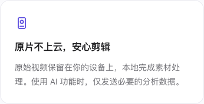

本页展示当前官网宣传卡片和本机渲染结果。
原始视频保留在你的设备上，本地完成素材处理。使用 AI 功能时，仅发送必要的分析数据。

本次文案替换前的 index SHA-256：5769c8c306ac419283a3167bdcfa5d9ef5bd5e123c59970ea44cb45f771835a3。上一版宣传文案为“原片留在本机，Agent 本地处理”，正文说明剪辑 Agent 在本机运行，并具体描述 AI 分析数据及其处理方式。该版本只作变更历史，不作为当前宣传文案。
上一轮截图仍保存在 `.local-evidence/privacy-copy-20261018-2358/`，未覆盖：桌面图 SHA-256 2d6a2ba0d0ce0dd6c0dcf4314d9b542fbfdead24233c498e9450901f68f7e946；窄屏图 SHA-256 e331fc3f053f0e9e716729e60bbe7b5bfde54fde04cb1327f888d174e7e41adf。旧 run 与核验日志同目录留存。
本轮详细结果和网络传输记录：.local-evidence/privacy-copy-review-20261019-1918/run.json。新截图保存在该 run 的唯一证据目录。